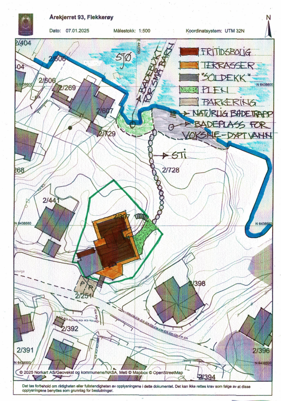
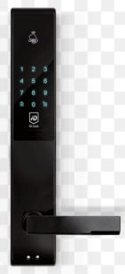
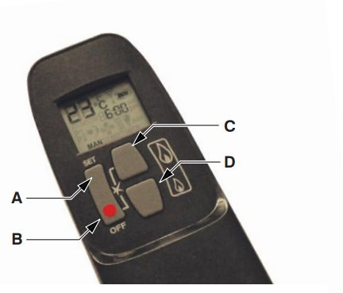
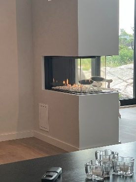
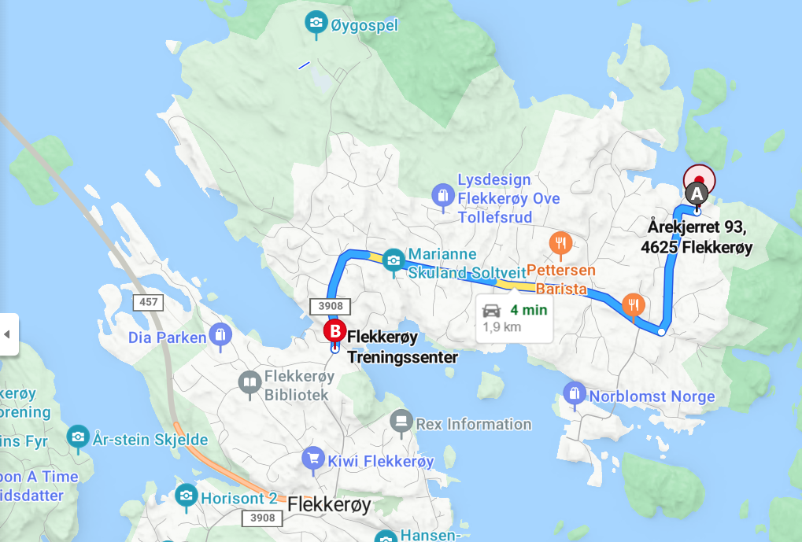
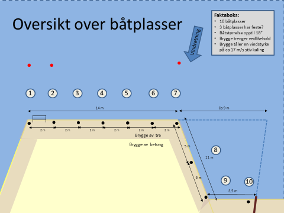

Everything you need to know before and during your stay at Nodeberget.


The main door has an electronic key lock with a code. The code must be used when opening/locking the door.
To open the door, you must activate the display on the key lock. Press the middle of the display so that it lights up. Then press <door code> + the symbol for <open door>. To close the door, the same procedure can be used – but then use <close door>.
REMEMBER: When pulling through, the door must be held/locked firmly so that it does not slam shut.


The gas fireplaces are started/closed by their own remote control. The gas for the gas fireplaces is located outside between the outbuilding and the cabin facing the mountain/parking lot in a cupboard. There is also a gas fireplace that can be used for grilling outside.
Starting the fireplace: Press buttons B and C simultaneously until a short beep confirms that the start-up sequence has been initiated. You will now hear continuous beeps until the pilot flame is lit. The fireplace will then ignite all three burners. When lit, the fireplace will always start at maximum power. By using button D, the flames/heat can be reduced as desired (by pressing button D twice quickly, the fireplace will adjust down to the lowest power on all three burners). You can adjust the flames all the way down so that the burners go out but the pilot flame will remain lit. To turn the fireplace off completely, button B must be used. Button C adjusts the flames/heat up. The fireplace is stopped by pressing B.
REMEMBER:
Sliding doors are opened/closed by pushing the handle to the right/towards the wall with both hands. That is, one hand on the door and one hand on the handle. Then turn the knob to the left. Then the door opens.
REMEMBER to bring in mats, pillows and mattresses every evening after use due to possible rain, moisture or wind.
There is internet at the cottage. Network name and password will be communicated at check-in.
There are integrated Sonos speakers in the ceiling on the 1st floor that can be used via the Internet. There is also a portable speaker in the house/shed that can be used. It can be connected to Bluetooth.
There is a large smart TV that can be used – via various streaming channels or via Apple TV.

All garbage must be wrapped in bags – and thrown into the garbage bins located in the parking lot. The key to these garbage bins is in the home.
REMEMBER: Use the key fob to open the trash cans – the key is in the cabin. During the winter period a key fob must be used – located in the cabin.
During the summer period, garbage is thrown into containers by the parking lot. There is source separation:
During the winter period (October to April) all garbage must be thrown into containers located at the cabin waste collection point at the turnoff at the end of Skibbuveien, Skålevig. The same source sorting applies.
This is located on the road in the middle between the cabin and the roundabout (the Kiwi shop). Skibbuveien is located on the old main pier on Flekkerøy, down towards the sea (about 200 meters from the main road). Drive towards the harbour – not to the fitness center.

The drawing shows the different boat spaces on the pier, and the holiday home has boat space no. 1.
Other boats and kayaks must not be used/touched, as these belong to the other cabins.